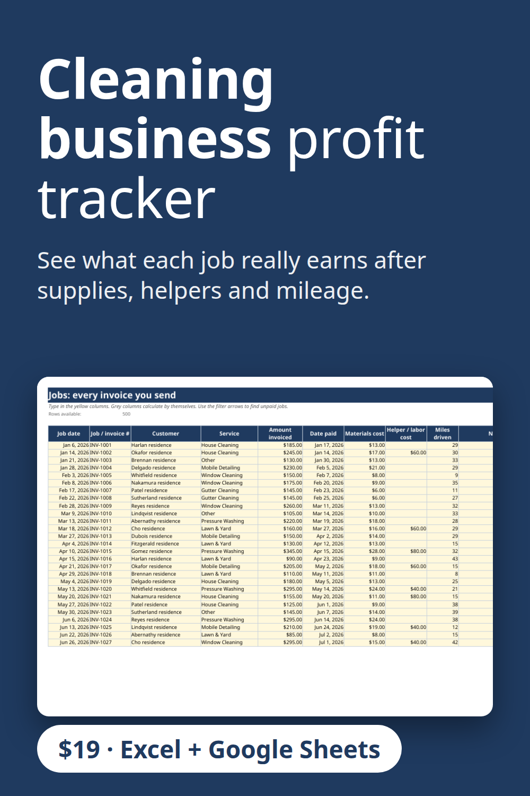

A cleaning business profit tracker that shows profit and margin on every job after materials, helper pay and mileage. Also works for window cleaning, pressure washing, lawn care and handyman work. Includes a dashboard, expense log and monthly profit and loss. Excel and Google Sheets, no macros. $19 download.
Get the $19 version on Gumroad
Built with the help of AI tools, then tested: every report number was recalculated separately.